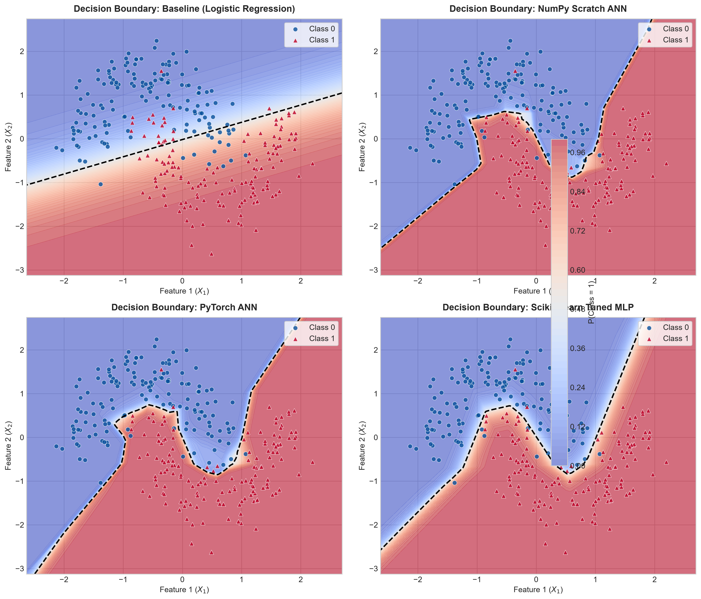
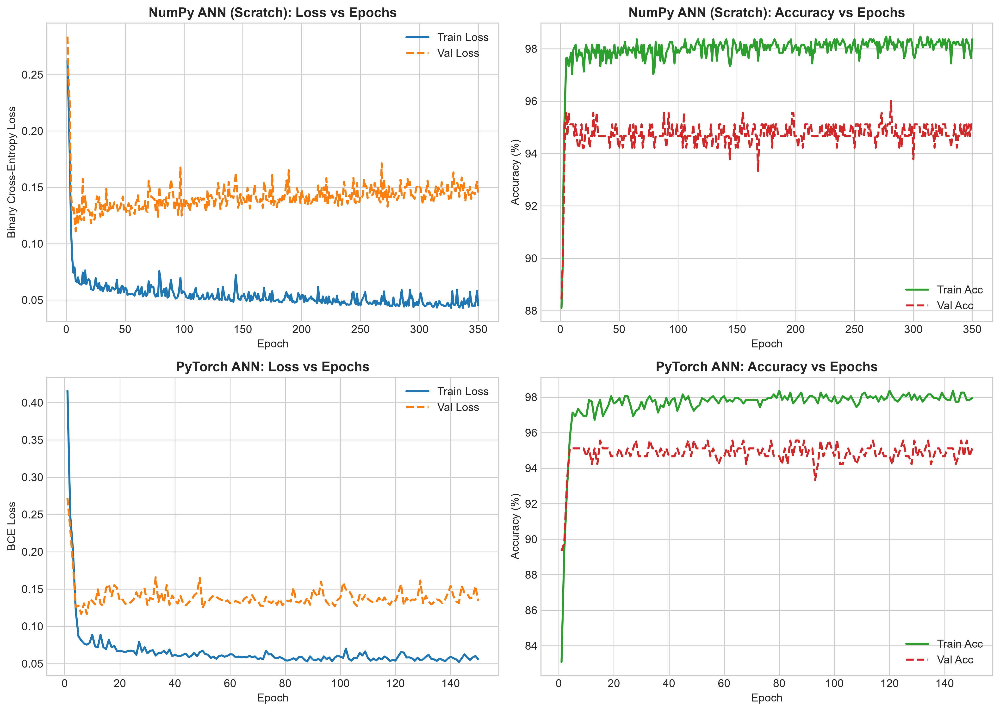
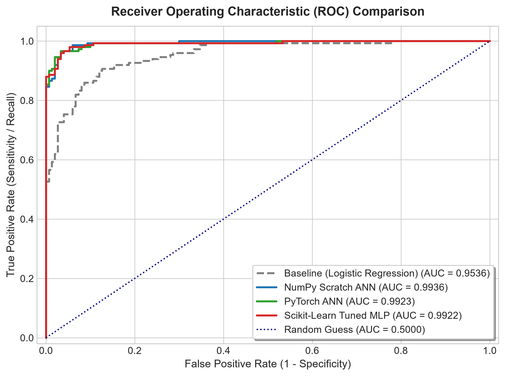
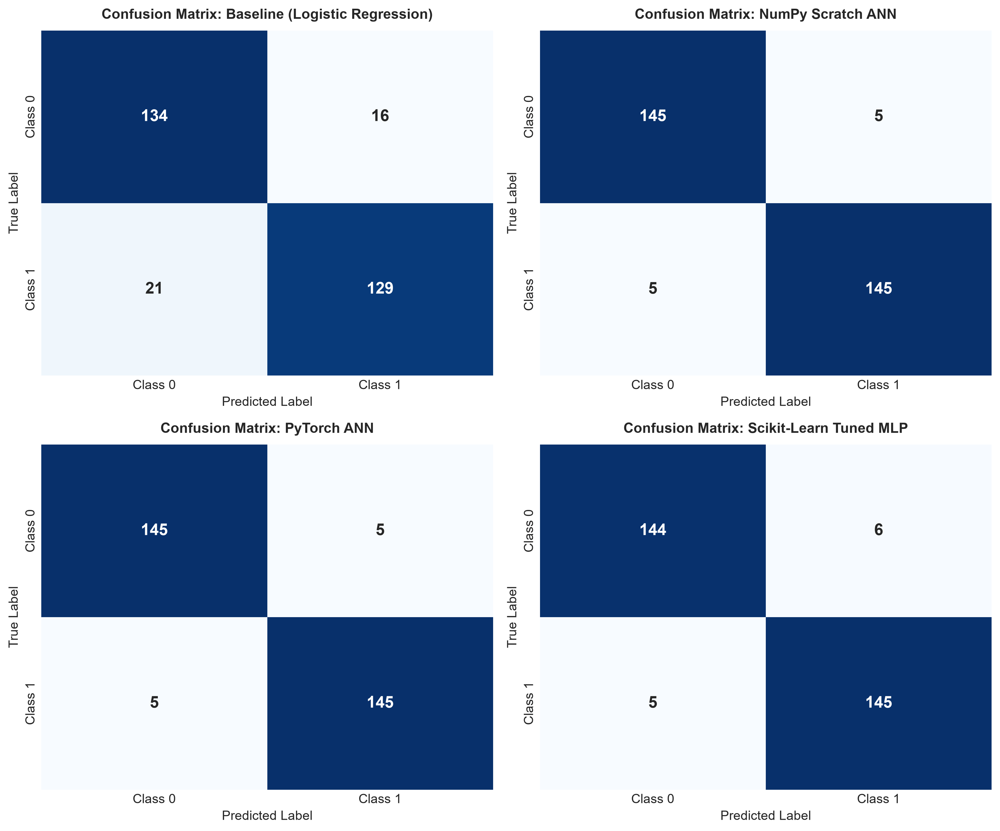
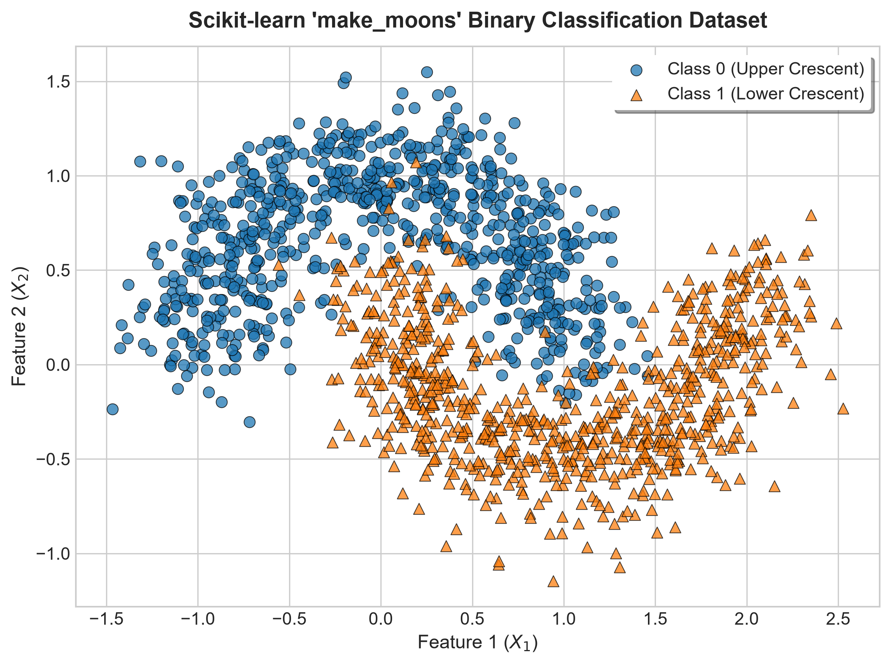

Scikit-learn make_moons Binary Classification (1500 samples, noise=0.20)
| Model Architecture | Type | Accuracy | Precision | Recall | F1-Score | ROC-AUC |
|---|---|---|---|---|---|---|
| NumPy Scratch ANN ([2, 16, 8, 1]) | Neural Network | 96.67% | 96.67% | 96.67% | 96.67% | 0.9936 |
| PyTorch ANN ([2, 16, 8, 1], AdamW) | Neural Network | 96.67% | 96.67% | 96.67% | 96.67% | 0.9923 |
| Scikit-Learn Tuned MLP (GridSearchCV) | Neural Network | 96.33% | 96.03% | 96.67% | 96.35% | 0.9922 |
| Baseline (Logistic Regression) | Linear Hyperplane | 87.67% | 88.97% | 86.00% | 87.46% | 0.9536 |

Figure 1: Decision Boundaries. Shows the linear failure of Logistic Regression (straight line) vs. the non-linear S-curve manifolds learned by the ANNs wrapping around the two crescent moons.

Figure 2: Training Convergence. Loss and Accuracy per epoch for both NumPy Scratch ANN (Adam) and PyTorch Deep Learning ANN.

Figure 3: ROC Curves. Demonstrates the superior discriminative capability (AUC > 0.992) of neural models over linear classifiers (AUC = 0.9536).

Figure 4: Confusion Matrices. Test set performance breakdown (150 class-0 and 150 class-1 samples).

Figure 5: Dataset Distribution. 2D scatter of the Scikit-learn make_moons interleaving half-circles with Gaussian noise σ=0.20.